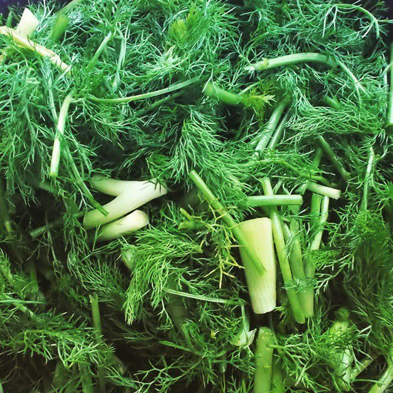
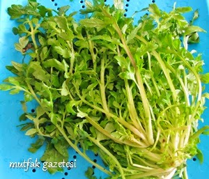
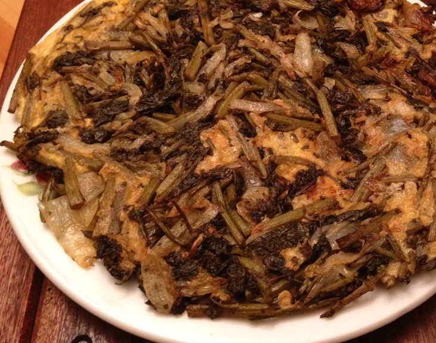
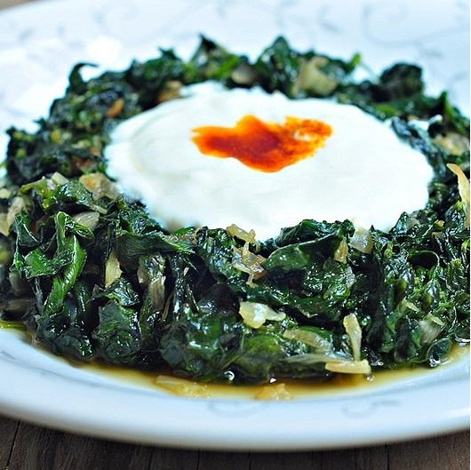
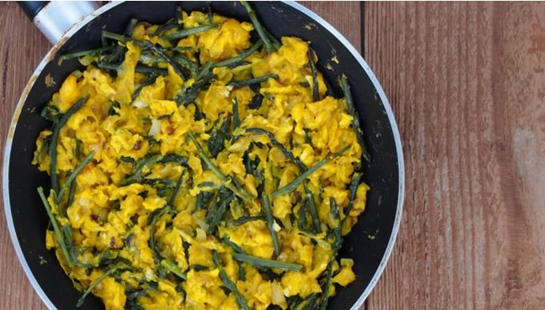

|
Ege Bölgesi, Türkiye'nin coğrafi bölgelerinden biridir. İlkçağ'dan beri bölgede yerleşim alanları mevcuttur. Günümüze kadar ayakta kalan Efes gibi antik kente sahiptir. Bölge Kurtuluş Savaşı'nın en önemli savaşlarına sahne olmuştur. Kütahya ve Afyon bu savaşların en önemlilerinin geçtiği illerimizdir. |
İLLERİ
İklim ve Bitki Örtüsü
|
Bölgenin asıl Ege Bölümünde graben ovaları sayesinde içlere kadar sokulan Akdeniz İklimi görülür. Bu alanlarda yazları sıcak ve kurak, kışları ılık ve yağışlı bir iklim görülür. Bitki örtüsü makidir ve yer yer ormanlara da rastlanır. Bu bölgede yağışlar ortalama ocak ayında daha fazla görülmektedir. İç Batı Anadolu bölümüne gidildikçe yüksekliğin artması ve denize olan uzaklığı sebebiyle iklim karasallaşır. Yazları sıcak ve kurak, kışları soğuk ve kar yağışlı Karasal İklim görülür. Bitki örtüsü de Bozkırdır. |
Tarım ve Hayvancılık
|
Bölgenin yurt ekonomisine katkısı daha çok tarım alanındadır. Bölümler arasında iklim ve yeryüzü şekillerinin farklı olmasına bağlı olarak yetiştirilen ürünler arasında da farklılık ve çeşit vardır. |
||
|
Tütün: Kıyı ovalarında yetiştirilir. Ülke üretiminin %65’ini yetiştirir. Birinci sıradadır. |
||
|
Pamuk: Asıl Ege Bölümündeki alüvyal ovalarda ve özellikle güneye yakın bölgelerde yetiştirilir. Ülke üretiminin %40'ını sağlar. İkinci sıradadır. |
||
|
Zeytin: Kıyı kesiminde, özellikle Edremit Körfezi çevresinde yetiştirilir. Birinci sıradadır. |
||
|
İncir: En çok Büyük Menderes vadisinde yetiştirilir. Birinci sıradadır. Turunçgiller: En çok Akdeniz ikliminin görüldüğü kıyı bölümünde yetiştirilir. Üzüm: En çok Gediz Vadisi'nde yetiştirilir. Ülke üretiminin %35’ini sağlarken birinci sırada yer alır. |
||
|
Haşhaş: İç Batı Anadolu'da Afyon ve Kütahya çevresinde kontrollü olarak yetiştirilir. |
||
|
Şekerpancarı: İç Batı Anadolu Bölümü'nde yetiştirilir. |
||
|
Tahıllar: İç Batı Anadolu Bölümü'nde yetiştirilmez. |
Turizm
|
Ege Bölgesi, Marmara Bölgesi'nden sonra turizm geliri en fazla ikinci bölgedir. Akdeniz ikliminin görüldüğü kıyılar deniz turizmi açısından zengindir. Bunlardan Çeşme, Kuşadası, Didim, Bodrum en ünlüleridir. Bölgede İlkçağ uygarlıklarından ve Türk Devletlerinden kalan tarihi eserlerde turistlerin ilgisini çeken yerlerdir. Bu tarihi yerler İzmir'deki Efes ve Bergama, Muğla'da Bodrum Kalesi ve Halikarnas Müzesi,Kütahya'da ki Frig Vadisidir. |
Ege Mutfağı
|
Zeytin ve Zeytinyağı: 2500 yıldır Ege mutfağının vazgeçilmezi olmuştur. Burada etli yemekler ve pilav dahil tüm sebzeler zeytinyağı ile pişirilir. Zeytinyağı meze, salata, ot ve sebzeleri lezzetlendirirken, kekik, karabiber ve kırmızıbiber gibi baharatlarla karıştırılıp ekmekle de tüketilir. |
||
|
Otlar: Renklerini ve besin değerlerini kaybetmeyecek şekilde, mümkün olduğunca az pişirmek esastır. Bu şekilde pişirilen otlar limon ve zeytinyağı ile hem meze hem ana yemek olarak servis edilir. |
||
|
Sebzeler: Diğer mutfaklara göre çok kullanılır. Sebzeler tek olarak pişirildikleri gibi birlikte de pişirilebilirler. Enginar ve baklayı birlikte pişirmek, hatta çeşitli sebzeleri karıştırarak ‘türlü’ adı verilen yemeği yapılır. |
||
|
Balık: Ege mutfağının bir diğer önemli unsurudur. Mevsimine göre yapılan balık yemekleri sebzeler ve otlar ile de birleştirilir. |
||
|
Tatlı: Genellikle sütlü tatlı tüketilir. İncir tatlısı ve kabak tatlısı gibi sebze ve meyvelerin kullanılır. |
OTLAR
| EBEGÜMECİ | RADİKA | ARAPSAÇI | KAYA KORUĞU |
|  | |||
|
1500 kadar bitki türüne sahip olan ebegümcigiller familyası, yiyecek olarak tüketilmesinin yanı sıra tıptan kozmetiğe kadar farklı alanlarda da kullanılır. Ebegümecinin 10’a yakın türü, özellikle İzmir Çeşme civarında yetişir. Yol kenarlarında, tarla kenarlarında, tarla içleri ve boş alanlarda kendi kendine yetişen ebegümeci, 20-30 cm. uzunluğa erişebilir. Mayıs ayından Eylül ayına kadar çiçeklenen bitkinin pembe renkli, eflatuni çizgili çiçekleri, yaprakların koltuklarından çıkar. Ebegümeci dökülen tohumlarıyla çoğalır. Ebegümecinin Ege mutfağında özel bir yeri vardır. Yaprakları haşlanarak salatası yapılabildiği gibi yıkanıp tuzlanarak çiğ olarak da salatalara katılabilir. Kavurma, çorba, etli ya da pirinçli yemek ve hatta gözleme de ebegümeci ile yapılabilir. |
Hindiba papatyagiller familyasından, sebze olarak yararlanılan bir yıllık bitki türü. Ege otları denilince ilk akla gelenlerden biridir radika. Yapraklarından salata olarak yararlanıldığı gibi sıcak yemek de yapılır. Yaygın olarak yabani hindibanın yaprakları ilkbaharda toplanarak şifalı ot ve sebze olarak tüketilir. Bu yapraklar ülkemizde “Hindiba” ve “Radika” olarak bilinir. Genellikle çayırlarda, nemli ve kuytu çalılıklarda, yol kenarlarında yetişir. Yaprakları tırtıklıdır. Acı radikanın yapraklarının daha tırtıklı olması onu tatlı olanından ayıran en belirgin özelliktir. Radika bahar aylarında sarı çiçek açar. Yapraklar koparıldığında ve bitkinin kökünden yapışkan, süte benzeyen bir sıvı çıkar. Radika ile yapılan, zeytinyağı ve limon eşliğinde tüketilen salata Ege mutfağının göz bebeğidir. Özellikle balığın yanında tadına doyum olmaz. Radika ayrıca ot kavurmalarında da kullanılır. |
Yabani rezene ve sıralık olarak da bilinen arapsaçı otu, ısırgangillerden bir bitkidir. Havuç ve maydanozla aynı aileden olan arapsaçı Ege ve Akdeniz’de yetişen hoş, anason kokulu bir ottur. Dereotuna çok benzeyen arapsaçı bu koku sayesinde dereotundan ayırt edilir. Kuzey Anadolu’da, Ege ve Akdeniz’de yetişir. Arapsaçı sonbahardan ilkbaharın sonlarına kadar tarla, akarsu kenarları ve kuru yamaçlarda yetişir. Körpe filizleri, tohum ve yaprakları yemek yapımında kullanılır. Giritlilerce en makbul pişirme yöntemi kuzu etiyle birlikte pişirilmesiyse de Ege ve Akdeniz’de karışık ot kavurmalarına, böreklere konur. Balık ve diğer et yemeklerinde kullanılır, bakliyatlarla uyumludur. |
Bazı cilt hastalıklarında ve iltihaplı rahatsızlıklarda,iyileştirici özelliğiyle bilinen kaya koruğu, turşu olarak ya da salata şeklinde tüketiliyor. Egzama, sedef ve akne problemleri olanlara kaya koruğu tüketmeleri öneriliyor. Yaz mevsiminde tüketilir. |
| DENİZ BÖRÜLCESİ | EŞEK MARULU | CİBES OTU | ISIRGAN OTU |
|
Deniz kıyılarında suyun gel git yaptığı yerlerde sular çekildikten sonra yetişen bu bitki, tuzlu, ekşi ama çok lezzetlidir. İyotlu topraklarda yetiştiğinden iyot eksikliğine bağlı guatr hastalığına iyi gelir. Deniz börülcesi çok tuzlu olduğu için pişirilirken tuz eklenmemesi önerilir. Yaz mevsiminin sonlarına doğru tüketilmesi önerilir çünkü deniz börülcesi bu zamanda daha etli bir yapıya sahip olur. |
Eşek marulu papatyagiller ailesine mensuptur. Tahliç, yağ marulu gibi isimleri de vardır. Türkiye’de hemen her bölgede, özellikle yol kenarlarında, bahçelerde kendi kendine yetişen, tadı acı bir bitkidir. Tuzlu suda bir süre bekletilirse acılığı bir miktar gider ve özellikle Ege-Akdeniz bölgesinde salatası, böreği yapılır. |
Ege Bölgesi’nde yaşayanların yakından bildiği cibes otu, yeşil renkli marula benzer bir bitkidir. Aslında kökeni maruldan ziyade lahanaya dayanmaktadır ve hem çiğ hem de pişmiş olarak tüketilebilmektedir. Ege yöresinde sıklıkla tüketilen radika (karahindiba) gibi cibes otu da, sofraların vazgeçilmez lezzetlerinden bir tanesidir. Özellikle bahar ve yaz aylarında bolca tüketilen bu bitkiyi çiğ olarak tüketmek için kabuklarını güzelce temizlemek gerekir. Aksi takdirde ağızda pek hoş olmayan bir tat bırakabilir. |
Isırgan Otu, halk arasında dikenli ot olarak da bilinen bitki türüdür. Isırgan otu ısırgangiller familyasında olduğu için tohumu da sağlık açısından faydalıdır. Mayıs ve ağustos ayında çiçekler açmaya başlar. Çiçek fındık görünümde olur. Isırgan otun gövde kısmı diktir ve boyu kısadır. Dört köşeli yıldız görünümde olur. Yaprak kısımları oval görünümde koyu yeşil ve parlak yaprakları vardır. Isırgan otu sağlığa faydalı olduğu kadar ısırganın tohumu da fazladır. Tohum yağı cilt içinde çok faydalı olur. Isırgan otu dikenli bitki olduğu için kişi el ve parmakla dokunduğu zaman vücudu acıtır. Dokunan yerde şiddetli ağrı kızarıklık oluşur. Isırgan otu sağlık için tercih edilen bitkidir. Bazı kişilerde yan etki ve alerji yapabilir. Isırgan otu doğada kendiliğinden yetişen bitkidir. Su kenarı, ağaç kökünde ve doğanın her hangi bir yerinde kolaylıkla bulunur ve toplanır. Isırgan tohumu alıp kendinizde yetiştirebilirsiniz. Bakımı kolaydır. Sadece uygun toprak alanına tohumu atmak yeterli olur. Yağan yağmur ısırgan otunun su ihtiyacını karşılar. Isırgan otun tohumu toprak altında uzun yıllar yeşermeye devam eder. Etkisini kaybetmeyen özellikte bitkidir. |
| SU TERESİ | TURP OTU | ŞEVKETİ BOSTAN OTU | ÇİĞDEM OTU |

|
|||
|
Turpgiller ailesinden olan su teresi, keskin kokusu, hafif mayhoş ve acımtırak tadı ile bilinir. Yemeklerin yanında veya sadece salata olarak tüketilebilen su teresi, aynı zamanda özütü çıkarılarak şifa kaynağı olarak da kullanılabilmektedir. Özellikle her formda tüketilebilir olması, su teresini son derece değerli kılmaktadır. Genellikle bataklık gibi bol suyun olduğu bölgelerde yetişen bu bitki nemin yüksek olduğu yerlerde çok daha fazla büyüyebilir. İçinde barındırdığı kükürt, demir, potasyum, fosfor ve iyot gibi mineraller sayesinde çiğ veya pişmiş olarak tüketilmesi halinde, vücutta eksik olan çoğu maddeyi yeterli hale getirecektir. Sadece mineral değil, vitamin açısından da oldukça zengin olan bu bitkinin, dış yüzeyinin de şifalı bir yönü bulunmaktadır. Koyu yeşil renge sahip yapraklarının kadifemsi, tüylü bir dokusu vardır. Su teresi ne kadar fazla su emilimi sağlarsa o oranda büyüyebilir. Boyu 35 cm. ile 60 cm. arasında değişebilir. Yapraklarından hariç beyaz çiçekleri de bulunan su teresinin son derece spesifik bir kokusu bulunmaktadır. |
Turpotu en kolay bulunan ve sık tüketilen yabani otlardandır. Kalın, dişli kenarlı ve tüylü yaprakları olan bu otsu bitki doğada kendiliğinden yetişir. Görünümü hardal otuna benzer, ancak sarı çiçekleri olan hardal otundan farklı olarak beyaz çiçekler açar. Neredeyse tüm dünyaya yayılmış olan en önemli yabani otlardan birisidir. Rokaya benzer. Çiğ olarak yenirse, baharatlı, hafif acımsı bir tadı vardır. Bu yüzden haşlanarak kullanılır. Ekim ayında çıkar, Nisan, mayıs aylarına kadar devam eder. Turp otlarının dip kökleri ve kalın sert dalları keserek ayıklanır. Dış ve kart yaprakları ayıklanır, yapraklarının uç kısımları kesilerek atılır. Ayıklanmış turp otları iyice yıkanır. Bıçak kullanmadan elle parmak uzunluğunda 3-4 parçaya bölünür. Ege bölgesinde en çok salatası yapılır. Turp otu salatası çiğden değil otlar haşlanarak yapılır. |
Şevketi bostan otu Ege’nin meşhur otlarından biridir. Dikenli bir bitki olan şevketi bostan nemli alanlar, yol kenarları ve nadas alanlarında bulunur. Çiçekleri sarı renklidir. Aralık ayından Mayıs sonuna kadar Ege ve Akdeniz bölgelerinde yetişir. Şevketi bostan yakın zamana kadar sık tüketilen bir bitki değildi ancak son dönemde bu ota olan talep arttı. Bu nedenle yabani olarak yetişen şevketi bostan kültür ortamında da yetiştirilmeye başlandı. Şevketi bostanın kökleri ve köke yakın yaprakları dikenlerden iyice temizlendikten sonra tüketilir. Haşlanarak yapılan salatası çok lezizdir. |
Rengârenk çiçekleriyle hem göze hem kulağa hitap eden çiğdemin, taze soğan ve sarımsağı andıran yumruları Ege’de sıklıkla tüketilir. Çok yıllık, yumrulu, sarı ya da mavi çiçekli otsu bitkilerdir. Çiçekler, türüne bağlı olarak, ilkbahar ya da sonbaharda açar. İlkbaharda çiçeklenen türlerin yumurtalığı toprak altında kalan uzun çiçek tüpleri vardır. Çiçekler geceleri ya da kötü havalarda kapanır. Çiğdemin ana yurdu Alpler, Güney Avrupa ve Ege bölgesidir. Çiçeklerinden dolayı bahçecilikte aranan ve sevilen bir bitkidir. Yumruları Türkiye'de çiğ olarak ya da külde pişirilerek yenir. Ayrıca yemeği de yapılır. Yemekleri arasında Çiğdem pilavı, Çiğdem aşı, Çiğdem sütlüsü başta gelir. Özellikle çiğdem pilavının lezzetine doyum olmaz. |
| ÇİRİŞ OTU | EŞEK DİKENİ | GELİNCİK OTU | HARDAL OTU |

|
 | ||
|
Çiriş otu aslında, çok yıllık otsu bir bitkidir. Soğana benzerliği nedeniyle Zambakgiller ailesinden gelmektedir. Çiçeklidir ve oldukça hoş bir görüntüsü vardır. En yaygın bilinen hali ile çiçekleri dolgun ve sarıdır. Yeling otu, yabani pırasa ve sarı zambak isimleriyle de bilinir. Çiçeklerinden ziyade köklerinde oluşan yumrular kullanılır. Bir bahar veya yaz bitkisi olarak nitelendirmek mümkündür. Genellikle Nisan ve Temmuz ayları arasında çiçeklerini açar. Çiçekleri bazı yörelerde şifa amaçlı kullanılıyor olmasına rağmen genel olarak kökleri kullanılır. Kavurması, yemeği ve zeytinyağlısı tüketilir. |
Kırmızı ve mor renkte çiçekler açan eşek dikeni, ülkemizin neredeyse çorak olan hemen hemen her arazisinde yetişir. Eşek dikeninin Türkiye ‘de yetiştiği yerler, Ege bölgesi, Doğu Anadolu ve Güney Doğu Anadolu bölgesidir. Eşek dikeni nadir olarak Ege ve Akdeniz bölgesinde de yetişmektedir. Eşek dikeninin ege bölgesinde kenger ismiyle kahvesi yapılmaktadır. Eşek dikeninin en çok zeytinyağlı yemeklerinin yapıldığı yer ege bölgesidir. Haziran ve ağustos ayları arasında tüketilir. |
Şifalı bir bitki olan gelincik otu mutfakta farklı şekillerde tüketilir. Taze toplanan yaprakları yemek yapımında kullanılır. Gelincik otunun soğanla birlikte yumurtalı kavurması yapılır ve yaprakları börek benzeri hamur işlerine katılır. Mevsim sebzeleri ile birlikte salatası da yapılan gelincik otu köftelere eklenir. Gelincik otunun kurutulan çiçeklerinden çay yapılır. Gelincik çiçekleri kaynatılmadan önce bir gece su içinde bekletilir ve ertesi gün nane ile birlikte kaynatılır. Gelincik çiçeğinin tadı acı olduğu için şekerden ziyade bal veya pekmezle tatlandırılır. Haziran ve temmuz ayları arasında tüketilir. |
Hafif aromalı ve acımsı tadıyla pek çok yörede sevilerek yenen bir ottur. Çorba, salata, meze ve yemek yapımında kullanılır. Acımsı tadından dolayı yemeği yapılmadan önce kaynar suda hafifçe haşlanıp ve süzülmelidir. Ege’nin geleneksel ot salatası için zeytinyağı ve limon suyuyla tatlandırılır. Haşlamadan doğrudan kavurup yumurtalı olarak yemek de mümkündür. Taze iken yaprakları mükemmel bir yemek ve salata malzemesi olarak tüketilen hardalın, tohumları ve tohumlarından elde edilen yağı, soslarda ve doğal sağlık reçetelerinde kullanılmaktadır. Temmuz sonu ve ağustos ayı ortasında tüketilir. |
| HODAN OTU | İĞNELİK OTU | KAZAYAĞI | KENGER OTU |

|
|||
|
Hodangiller familyasındandır. Odan, otan, kaldırık gibi farklı yörelerde isimleri vardır. Farklı yemekler içerisinde sebze rolünü üstlenmesi ile beraber hodan otunun ilk tüketim noktası da aslında sıcak şekilde olmalıdır. Kavurmasını yapmadan önce 1-2 saat sirkeli suda dinlendirerek daha çok verim alma yoluna gitmeniz de önerilen tüketim noktalarından bir tanesidir. Yine hodan otu tüketimi salata ve sandviçler ile beraber küçük yaşlardan itibaren alışkanlık kazandırma anlamında da faydalı olacaktır. Hem yan besin hem de ana öge olarak pek çok yemeğe lezzet katması da hodan otunun dikkat çekici yönlerinden. Nisan ve ekim ayları arasında tüketilir. |
Leylek gagası olarak da bilinen iğnelik otu, Türkiye’nin birçok bölgesinde görülür. Isırgan otundaki gibi yapraklarında tüyler bulunur. Tıpkı maydanozun yaprakları gibi tırtıklı yaprakları vardır. Tohumlarının ucunın bir gagaya benzemesi yüzünden leylek iğnesi de denilmektedir. Haziran ayında pembe çiçekleri çıkar. Meyveleri ise ağustosta olgunluğa erişir. Ege bölgesinde sıklıkla tüketilen bu bitki, genel olarak yemek yapımında kullanılmaktadır. Fakat çiçeklendiği dönemde tüketilmemektedir. Yemek yapmaya en uygun dönemi çiçeklenmeden önceki dönemdir. Yapraklarındaki türler bitkinin bir çeşit savunma mekanizmasıdır. Bu bitkinin, Ege bölgesinde kavurması meşhurdur. Pırasa, soğan, salça ve zeytinyağı ile karıştırılıp pişirilir. Yoğurt ile servis edilir. Çökelek ve Lor peynirleri ile karıştırılıp böreklerde ve poğaça içlerine iç harc olarak hazırlanır. Pilavın içinde de aroma olarak kullanılabilir. Çeşitli bölgelerde suda farklı bitkilerle karıştırılıp çay yapılmaktadır. |
Kazayağı Ege yöresine özgü çok lezzetli bir ottur. Doğada kendiliğinden yetişen görünümü maydanozu andıran bir bitkidir. Yaprakları maydanoza göre daha sert ve dayanıklıdır. Kaz ayağı otunun iri ve kart sapları temizlenir. Kullanılacak olan taze yaprakları körpe sapları bol su ile iyice temizlenene kadar yıkanır ve doğranır. Körpe yaprakları çiğ olarak yenilebilir. Ama çiğken tadı hafif acı ve yaprakları biraz serttir. Bu nedenle çoğu zaman kavrulur, bazen de haşlanır. Ege'de çoğunlukla kavrularak tüketilir. Tek başına veya diğer otlarla uyumlu bir tadı olduğu için karışık ot kavurmalarında kullanılır. Otlu böreği, sade veya yumurtalı kavurması yapılır. Pirinçle ya da bulgurla pişirilerek ıspanak gibi yemeği yapılır. Kısa süre haşlanır, süzülür ve üzerine sarımsaklı yoğurt dökülerek yenir. Turşusu yapılır. |
Kenger bitkisi bazen Şevketi Bostan bitkisiyle karıştırılır. Şevketi bostan ve Kenger aynı bitki değildir. Görüntü itibariyle benzerlik gösterir. fakat özellikleri farklıdır. Kenger otu Türkiye’de bahar ayının Nisan ve mayıs aylarında, Akdeniz ve Ege Bölgelerinde yetişir. Kenger otundan yemek yapılmadan önce toplanır. Gövde kısımları ayıklanarak yıkanır. Yıkanan kengerler kısa zamanda kullanılmalı aksi taktirde siyahlaşarak bozulur. Yemeklerde ise gri rengindedir. Yani haşlandığında gri rengine bürünür. Bu onun bozulduğu anlamına gelmez bunun bilinmesinde fayda vardır. |
| KUŞ OTU | LABADA | SARMAŞIK OTU | SİLCAN OTU |
|
Karanfilgiller familyasındandır. Diğer adları Serçe otu (Serçeler severek yedikleri için). Serçe dili. Sıçan kulağı.10-40 cm boylarında, tırmanıcı, bir yıllık, otsu bir bitkidir. Etli ve sulu, bir yüzü tüylü, karşılıklı yapraklar, yumurtamsı, çok küçük saplıdır. Şubat-kasım aylarında, neredeyse bütün bir yıl, dal uçlarında, beş taç yapraklı, küçük, beyaz, yıldızsı çiçekler açar. İzmir ve kimi Ege kentlerinin pazarlarında baharları sebze olarak satılır. Çiğ salatası yapılır ya da börek harcı olarak kullanılır. Bileşiminde karaten, sabit yağ, boyar madde, C ve B grubu vitaminleri bulunur. |
Evelik, develik ve efelik otu olarak da bilinen labada, karabuğdaygiller familyasından olup kuzukulağı ile de akrabadır. Dere kenarlarında ve sulak çayırlarda yetişme imkânı bulan labada bitkisi, yüzlerce yıldır kullanılagelen çok yıllık bir bitkidir. Labada otunun en etkili tüketim şekli mevsiminde taze olarak yenilmesidir. Topladığınız labada yapraklarını toprağından arınması için bol suyla yıkayıp süzün. Labada yaprağı ile labada sarması hazırlayabilirsiniz. Labada yapraklarını haşlayarak çay şeklinde de tüketebilirsiniz. Labada kökünden faydalanmak istiyorsanız, bitki köklerini topraktan ayırmak için birçok kez dikkatlice yıkamanız gerekir. Ardından kökleri haşlayıp suyunu tüketebilirsiniz. |
Sarmaşık otu acı ot, tilkişen ve yabani Kuşkonmaz olarak da bilinir. Sarmaşık otu, Ege Bölgesinde özellikle İzmir, Manisa ve Aydın’da yetişmektedir. Sarmaşık otu, Şubat ve Nisan aylarında görülen bir bitkidir. Sarmaşık otunun tadı acıdır fakat lezzetli ve şifalı bir bitkidir. Sarmaşık otunun, boylu ve sarmal bir yapısı vardır. Sarmaşık otunun, uç kısımları koparılarak toplanan bir bitkidir. Sarmaşık otunun uçları taze, alt tarafları taze değildir. Sarmaşık otu yenildiği zaman damakta acı bir tat bırakmaktadır. Buna rağmen Sarmaşık otunun yılda en az bir defa da olsa tüketmek gerekir. Sarmaşık otu yemek için hazırlanırken kesinlikle metal dokundurulmamalıdır. Sarmaşık otu elle kırılmalı bıçakla doğranmamalıdır. Sarmaşık otu pişirilirken metal kaşık yerine tahta kaşık kullanılması daha iyidir. Aksi takdirde metal kullanılırsa acılık oranı daha çok artmaktadır. |
Zambakgiller familyasındandır. Sarmaşığa benzer. Taze sürgünler çıktığında toplanır. Kurutulup mevsimi dışında da yenebilir. Tırmanıcı ve sarıcıdır. Kışın yapraklarını dökmez. Kalp şeklindeki yaprakları diğer sarmaşıklara benzer. Güzel kokulu çiçekleri sarıyla yeşil arasındadır. Ege’de Akdeniz’de ve en çok da Karadeniz’de yenir. Silcan otunun yemeği olarak özellikle kavurması çok tüketilir. |
| MERCANKÖŞK OTU | TİLKİŞEN OTU | İSTİFNO (GİRİT-BAMBUL) OTU |
DAĞLAMA OTU |
|
Ballıbabagiller ailesinden olan Mercan köşk. Küçük yapraklı, pembe renkli çiçek veren bir bitkidir. Hoş kokusu ve aromasıyla hazmı kolaylaştırır, sakinleştirici özelliğe sahiptir. Mercanköşk Akdeniz ve Ege çevresinde büyüyen bir bitki türüdür ve mart aylarında seralarda yetiştirilir. Yaygın olarak yaprakları kullanılan mercanköşk bitkisi, fesleğen, kekik, kuru nane gibi baharat olarak tüketilir. Kurutulan mercanköşk, etli yemeklere eklenir ve aromatik kokusu ile özellikle domatesle hazırlanan salataların soslarına eklenir. Izgarada ve fırında pişirilen balık yemeklerinin üzerine zeytinyağı ile karıştırılarak dökülür. Lahana, havuç ve pırasa gibi sebzeler ile yapılan yemeklere de konan bitki, fırında yapılan tavuk yemeklerine eklenir ve çorbaların içine baharat olarak katılır. Gıda sanayinde de kullanılan mercanköşk, sosisin içine ve pizza sosuna eklenir. |
Yabani tatlı kuşkonmaz olarak da bilinir. Şubat – Mart aylarında toplanmaya başlanır. Toplanması zahmetlidir. Bol zeytinyağında kavurup yumurta yenilebilir. Zeytinyağında pişirip makarnaya da eklenebilir. Kendine has tadı olan çok leziz bir ottur. |
Genellikle Ege bölgesinde sıkça tüketilir. Halk arasında istifno, girit, bambul, bambıl, köpek üzümü ya da it üzümü olarak da bilinen kabak, biber ya da börülceyle pişirilince efsane bir lezzete dönüşen bitkidir. Sonbahar mevsiminde tüketilir. |
Papatyagillerdendir, koyungözü, sarı papatya ya da alagömeç olarak da bilinir. Genellikle Ege bölgesinde tüketilir. Taze sürgünlerinden haşlanarak ,zeytinyağlı salatası yapılır. Karışık ot kavurmalarında, böreklerde ve gözlemelerde kullanılır. |
Otları Saklama Yöntemleri
|
Kurutmak: Aromatik otlar genellikle küçük demetler halinde, serin, gölge ve havadar yerlerde baş aşağı asılarak kurutulur. Kekik, nane gibi çabuk kuruyabilen bitkiler pamuklu bezlerin üzerinde de kurutulabilir. Otlar tamamen kuruduğunda ayıklayıp temiz kavanozlara veya bez torbalara koyulup bu halde altı ay serin ve gölge yerde saklanabilir. |
||
|
Dondurmak: Özellikle her mevsim bulunmayan otlar ufak buz küplerine pay edip dondurarak da saklanabilir. Ancak bu otlar çiğ olarak değil yemeklerde kullanmak üzere dondurulabilir. Arapsaçı, madımak, ısırgan, yabani kuşkonmaz, köremen gibi pek çok ot mevsiminde bolca alınıp, ayıklanıp doğrandıktan sonra kendi suyunda pişirilip hacmi azaltılarak, soğuduktan sonra da buzdolabı poşetlerine konularak saklanabilir. |
||
|
Diğer Saklama Yöntemleri: Kimi otlar sirke, fesleğen, kişniş, tarhun gibi kimi otlar da zeytinyağı gibi koruyucu maddelerin içinde saklanabilir. Otu iyice yıkayıp, durulanıp suyundan tamamen arındırdıktan sonra kavanozlara doldurulup üzerine sirke veya zeytinyağı koyup serin ve gölge bir yerde saklanabilir. |
Otların Latince - Türkçe Adları
| LATİNCE ADLAR | TÜRKÇE ADLAR |
| Rumex Tuberosus | Kuzukulağı Otu |
| Scolymus Hispanicus | Şevketi bostan Otu |
| Asparagus Acutifolius | Sarmaşık Otu |
| Crocus Chrysanthus | Çiğdem Otu |
| Erodium cicutarium | İğnelik Otu |
| Sinapis Arvensis | Hardal Otu |
| Papaver Rhoeas | Gelincik Otu |
| Malva Sylvestris | Ebegümeci Otu |
| Salicornia Europaea | Deniz Börülcesi Otu |
| Raphanus Raphanistrum | Turp Otu |
| Urtica Dioica | Isırgan Otu |
| Foeniculum Vulgar | Arap Saçı Otu |
| Cichorium İntybus | Radika Otu |
| Sonchus Oleraceus | Eşek Marulu Otu |
| Eremurus Spectabilis | Çiriş Otu |
| Onopordum İllyricum | Eşek Dikeni Otu |
| Borago Officinalis | Hodan Otu |
| Rumex Patientia | Labada Otu |
| Falcaria Vulgaris | Kazayağı Otu |
| Stellaria Media | Kuş Otu |
| Smilax Aspera | Silcan Otu |
| Nasturtium Officinale | Su Teresi Otu |
| Solanum Nigrum | İstifno Otu |
YEMEKLER
| EBEGÜMECİ YEMEĞİ | RADİKA SALATASI | GELİNCİK OTU SALATASI | HODAN OTU YEMEĞİ | |||||||||
|  | ||||||||||||
|
Malzemeler • 1 demet veya 500 gr ebegümeci• 2 orta boy soğan • 200 gr kıyma • 1 kahve fincanı pirinç • Zeytinyağ • Tuz, karabiber, pul biber Hazırlanışı 1. Ebegümecinin yaprakları dallarından kopartılır ve bol bol yıkanır.2. Küp doğranmış soğanlar yağda sarartıldıktan sonra kıyması ilave edilir ve kavrulur. 3. Kavrulan soğan ve kıymanın üzerine ebegümeci ve yıkanmış pirinci ilave edilir. (Pirinci ebegümecini biraz pişirdikten sonra ilave edersek pirinç yumuşayana kadar otlar iyi pişip ölüyorlar. 4. Tuzunu, karabiberini ve çok az pul biberimde serptikten sonra ocağın en küçüğünde ve altını iyice kısıp kendi suyuyla pişmeye bırakıyoruz ama içinde pirinç olduğu ve çekeceği için eğer gerekirse azar azar sıcak su ilavesi yapılmalı. 5. Pirinçler yumuşayınca ve suyunu çekince ocaktan alıyoruz. |
Malzemeler • Yarım Demet Radika• Haşlamak için su • Zeytinyağı • Limon • Tuz • 2 diş sarımsak Hazırlanışı 1. Radikaları bol suda yıkayalım, temizleme suyuna sirkede ekleyebilirsiniz.2. Radikaları kök kısımlarını kesmeden kaynayan suya atın, 10 dakika kadar haşlayıp suyunu süzün. 3. Soğuk su ile durulayın süzdürün ve soğuyunca kök kısımlarını kesip, parmak uzunluğunda doğrayın. 4. Başka bir kâsede sızma zeytinyağı, limon suyu, tuz, rendelenmiş sarımsağı alıp karıştırın. 5. Radikaların üzerine karışımı döküp, üzerine pul biber serpin, 10 dakika bu karışımda bekledikten sonra, servis edebilirsiniz. |
Malzemeler • 250 gr gelincik otu• 2 adet havuç • 4 adet taze soğan • 2 yemek kaşığı sızma zeytinyağı • Limon suyu, tuz Hazırlanışı 1. Otları yıkayıp ince doğrayın.2. Havucu rendeleyin. 3. Soğanları ince kıyın. 4. Malzemeleri salata kasesine alarak yağ, tuz ve limon ekleyerek karıştırın. |
Malzemeler • 1/2 kilo hodan otu• 3 yemek kaşığı tereyağı • 2 adet orta boy kuru soğan • 3 adet yumurta • 1 çay kaşığı karabiber • 1 çay kaşığı tarçın • 1/2 çay kaşığı tuz • 1- 2 çorba kaşığı bardağı sirke Hazırlanışı 1. 1- 2 çorba kaşığı bardağı sirke2. Hodan otunun köklerini temizleyin ve yıkayın. 3. 2- 3 parmak genişliğinde parçalara ayırın. 4. Sirkeli suya koyarak 2- 3 saat bekletin. 5. Hodanınızı sirkeli sudan çıkartıp 1- 1,5 saat kadar haşlayın. 6. Haşladığınız otun suyunu süzün. 7. Bir tavada soyup dilimlediğiniz soğanı kavurun. 8. Soğan pembeleşmeye yüz tuttuğunda üzerine hodan otunu ekleyin. 9. Beraberce kavurmaya devam edin. 10. Çıkartmaya yakın tuzunu, karabiberini ve tarçınını koyun. 11. Kırıp çırptığınız yumurtaları ekleyip önlü arkalı pişirin |
|||||||||
| İĞNELİK OTU KAVURMASI | KAZAYAĞI OTU KAVURMASI | YUMURTALI KENGER KAVURMASI | KUŞ OTLU BULGUR PİLAVI | |||||||||
|  | ||||||||||||
|
Malzemeler • 2-3 Adet pırasanın yeşil sapları• ½ Kg iğnelik • 3-4 Adet kurutulmuş biber • 1 Kase sarımsaklı yoğurt • 3 Kaşık zeytinyağı • Tuz • Karabiber Hazırlanışı 1. Düz bir tavada yağı kızdırınız. 2. Pırasanın saplarını kavurunuz.3. Kurutulmuş biberleri de doğrayıp ekleyiniz. 4. Ardından 1 cm kalınlığında doğranmış iğnelikleri ekledikten sonra ara sıra karıştırarak kendi suyunda pişiriniz. 5. Haşlama tadının oluşmaması için kapak kapatmadan pişirmeniz gerekmektedir. 6. Pişirme işleminiz tamamlanınca sarımsaklı yoğurtla servis edebilirsiniz. |
Malzemeler • 1 demet kazayağı otu• 1 orta boy soğan • Zeytin yağı • Yarım çay bardağı su • 6 tatlı kaşığı pilavlık bulgur • Üzerine yoğurt dilerseniz yoğurdun içine ezilmiş sarımsak • 1 yemek kaşığı tereyağı, içine kırmızı pul biber Hazırlanışı 1. Kaz ayağı otunu yıkayıp saplarını keselim iri sapları temizleyip taze sapları kullanmak için ayıklayalım, Bol suda çok defa yıkayıp temizleyip doğrayın.2. Soğanı yemeklik doğrayalım, Tencereye zeytin yağını döküp kızdıralım. 3. Soğanları ekleyelim yumuşayana kadar kavuralım, Kaz ayağı otlarını ekleyelim. 4. Kazayağı otu suyunu salıp çekinceye kadar kavurup, sıcak suyu ekleyelim, Bulgurları içine ekleyip en son tuz ekleyip kısık ateşte kapağı kapalı olarak pişirelim. 5. Bulgular piştiğinde yemekte pişmiş demektir. 6. Kaz ayağı yemeğini servis tabağına alalım hafif ılınınca üzerine sarımsaklı yoğurdu döküp, tere yağında eritip pul biberle karıştırdığımız yağı dökelim. |
Malzemeler • 2 kg ayıklanmış kenger otu• 4 Yumurta • 50 Gram tereyağı veya sıvı yağ • Pul biber, Tuz Hazırlanışı 1. Kengerler koyu kabuklarından ayrılıp temizlenir.2. 15 dk. suda bekletilip çamurlarından arınması sağlanır. 3. Bol suda yıkanıp tencereye alınır. Üzerini geçecek kadar su konulup yumuşayıncaya kadar haşlanır, süzgece alınır. 4. Tavaya yağ konur, eriyince içine yumurtalar kırılır. 5. Süzgeçten alınan kengerler avuç içinde sıkılarak yumurtaların üzerine alınır karıştırıp kavrulmaları sağlanır. 6. Tuz ve pul biber eklenip ateşten alınır. |
Malzemeler • 1 adet kuş otu• 1 su bardağı bulgur • 1 adet kuru soğan • Tuz • 2 yemek kaşığı tereyağı • 1 yemek kaşığı sıvı yağ • Sıcak su Hazırlanışı 1. Otu temizleyin bol suda yıkayarak, doğrayın.2. Soğanı tereyağı ve sıvı yağ ile kavurun. 3. Otu ekleyerek diriliği gidene kadar 5 dakika kavurun. 4. Üzerine bulguru, tuzu ve üzerini bir parmak geçecek kadar sıcak su ekleyin. 5. Suyunu çekene kadar hafif ateşte ağzı kapalı olarak pişirin. 6. Dinlendirdikten sonra servis edin. |
|||||||||
| LABADA SARMASI | YUMURTALI SİLCAN OTU KAVURMASI | ARAPSAÇI OTLU GÜL BÖREĞİ | DENİZ BÖRÜLCESİ MEZESİ | |||||||||
|
Malzemeler • 40 yaprak labada• 1 su bardağı pilavlık bulgur • 1 yumurta • 1 adet yeşil soğan • 2 dilim peynir • Tuz • Pul biber • Nane Hazırlanışı 1. Labadaları 5-10 dk. kaynatıp yumuşayınca alıyoruz. Çok yumuşamaması gerek.2. İç harcı için 1 su bardağı bulguru haşlayıp pişiriyoruz. Başka bir kaba küçük küçük doğradığımız yeşil soğan 1 yumurtayı peyniri ve baharatlarla birlikte haşlanan bulguru da ilave edip karıştırıyoruz. 3. Labada yapraklarının ortasındaki sert kısmı bıçak yardımıyla ezelim ki sert kalmasın. İç harçtan koyup muska şeklinde sarıyoruz. Tencereye diziyoruz. 4. Pişirme süresi de oldukça kısa 5 dk. Tencereye Kırmızı biberli su kapıp koyuyoruz. 5. 5 dk. kaynadıktan sonra yenmeye hazır hale geliyor. İster yoğurt ister sade olarak arzuya göre servis yapabilirsiniz. |
Malzemeler • 1 bağ Silcan• 1 orta boy soğanın yarısı • 1-2 adet yeşil biber • 3 yemek kaşığı zeytinyağı • 2 sap taze soğan • 2-4 adet yumurta • Tuz, karabiber Hazırlanışı 1. Otların koyu renkli sert kısımlarını bol su ile yıkayın. Otları ister elinizle kırın isterseniz de bıçak yardımıyla eşit uzunlukta parçalara ayırın.2. Soğanı ince ince yemeklik doğrayın, biber ve taze soğanı ince ince kıyın. 3. Tavaya zeytinyağını alın, orta ateşte pembeleşene,kadar,soteleyin. Doğradığınız sil canları içine ilave edip 3-4 dakika kavurun. 4. Yumuşamaya başlayınca içine biber ilave edin ve 1-2 dakika daha kavurun. 5. Biberler yumuşayınca taze soğanları ilave edin 1-2 kez karıştırıp yumurtaları kırın. 6. İster bütün bırakın isterseniz de istediğiniz kıvamda pişinceye kadar karıştırın ve sıcak servis yapın. |
Malzemeler • 1 kg yufka• Yarım kilogram ıspanak • Yarım kilogram arapsaçı otu • 2 adet yumurta • 1 adet kuru soğan • 100 gram tuzsuz lor peyniri • Yarım çay bardağı sıvı yağ • 1 su bardağı su • Tuz karabiber Hazırlanışı 1. Ispanak ve arapsaçını çok iyi yıkadıktan sonra süzdürün ve ince doğrayın.2. Soğanı küçük küpler şeklinde kesip, yeşilliklere ekleyin. 3. Lor peynirini ilave edip iyice karıştırın. 4. Tuz ve baharatını katın. 5. Yufkaları tezgâha yayın, 4'e bölün ve su- sıvı yağ karışımıyla yağlayın. 6. Yuvarlar kenarlarına çizgi şeklinde iç koyun. 7. Rulo şeklinde sarın, kendi ekseni etrafında çevirin. 8. Fırın tepsisini yağlayın, gül böreklerini dizin. 9. Üzerine yumurta sarısı sürdükten sonra 180 dereceye ayarladığınız fırında kızarana dek pişirin. |
Malzemeler • 1 demet deniz börülcesi• 3 diş sarımsak • ½ çay bardağı zeytinyağı • 1 çorba kaşığı beyaz üzüm sirkesi • 1 çorba kaşığı nar ekşisi • 1 çay kaşığı pul biber Hazırlanışı 1. Bir tencere kaynar suya 3 diş sarımsak ekleyin.2. Kaynar suya 1 demet deniz börülcesini de ekleyerek 7-8 dakika haşlayın. 3. Haşlanan börülceleri soğumaları için süzgece alın. 4. Soğuyunca saplarından tutarak odunsu kısımlarından ayıkların ve bir kâseye alın. 5. Sosu için ½ çay bardağı zeytinyağı, 1 çorba kaşığı beyaz üzüm sirkesi, 1 çorba kaşığı nar ekşini ve pul biberi karıştırın. 6. Ayıklanmış börülceleri sos ile iyice karıştırarak servis tabağına alın. |
|||||||||
| SARMAŞIK OTU SALATASI | KAYA KORUĞU TURŞUSU | ZEYTİNYAĞLI CİBES MEZESİ | ISIRGAN OTU ÇORBASI | |||||||||
|
Malzemeler • 1 demet sarmaşık otu• Yarım limon suyu • Yarım çay bardağı sızma zeytinyağı • Tuz Hazırlanışı 1. Sarmaşığı filiz kısmından başlayarak elle ayıklayın. Sert kısma gelince sapını atın.2. Kaynayan tuzlu suda hafifçe yumuşayana kadar, haşlayın. 3. Servis tabağına alın. Üzerine 1-2 kaşık haşlama, suyundan, ekleyin. 4. Zeytinyağı, limon suyu ve tuz ile sos hazırlayın. 5. Sosu ilave edip ılık servis yapın. |
Malzemeler • Yarım kilo kaya koruğu• 1 baş sarımsak • 1/2 su bardağı zeytinyağı • 1 su bardağı sirke (tercihen üzüm sirkesi) • 2 yemek kaşığı kaya tuzu Hazırlanışı 1. Kaya koruklarını ayıklayın ve uzunlamasına ikiye bölün.2. Bol su ile 3-4 kez iyice yıkadıktan sonra bol su ile 10 dakika haşlayın. 3. Sarımsakları irice dövün sirke, tuz ve zeytinyağı ekleyerek bir karışım hazırlayın. 4. Temiz bir kavanozun yarısına gelecek şekilde kaya koruğunu yerleştirin. 5. Koruğun üzerine hazırladığınız karışımın yarısını dökün. 6. Sırasıyla üzerine tekrar kaya koruğunu ve karışımın kalanını koyun. 7. Kavanozun üzerinde boşluk kalırsa zeytinyağı dökerek hava almasını engelleyin. 8. Kavanozun kapağını sıkıca kapatıp serin ve güneş görmeyen bir yerde bekletin. 1 hafta sonra turşu hazır. |
Malzemeler • Yarım kilo cibes otu• 1 çay kaşığı karbonat • 1 yemek kaşığı sirke Sosu İçin; • 1 adet limon• 4 yemek kaşığı zeytinyağı • 1 tatlı kaşığı tuz Hazırlanışı 1. Cibesler temizlenerek, çok ufak ya da çok büyük olmayacak şekilde doğruyoruz.2. Geniş bir kabın içerisinde sirkeli suda 1 saat kadar bekletilir. 3. Daha sonra sıcak su dolu tencerede suya karbonat eklenerek 15 -20 dk. haşlanır. Haşlanan cibesler süzülerek soğumaya bırakılır. |
Malzemeler • Yarım kilo ısırgan otu• 1,5 bardak mısır unu • 3 kaşık tereyağı • 1 tatlı kaşığı nane • 4-5 diş sarımsak • Tuz Hazırlanışı 1. Isırganları doğrayın ve üzerini geçecek kadar suda haşlayın.2. Yumuşayınca haşlama suyundan 1 bardak alıp gerisini süzün. 3. Yaprakları tencereye alın suyu da ekleyerek blenderden geçirin. 4. Haşlanmış otları püre gibi ezin ve birkaç bardak daha su ekleyin. 5. Ocağa alıp yavaş yavaş mısır ununu ekleyin. 6. Bir taraftan tel çırpıcıyla çırpın. 7. Kıvam alana kadar pişirin. 8. Ocaktan almaya yakın dövülmüş sarımsak, nane ve tuzunu ilave edin. En son tavada erittiğiniz tereyağını koyup karıştırın ve ocaktan alın. |
|||||||||
| SU TERESİ CACIĞI | TURP OTU SALATASI | KUZU ETLİ ŞEVKETİ BOSTAN | ÇİRİŞ OTU ÇORBASI | |||||||||
|
Malzemeler • 1 adet salatalık• 1 tutam semiz otu • 1 tutam su teresi • 1 kâse yoğurt • 1 çay bardağı yoğurt suyu • 2 diş sarımsak • Tuz Hazırlanışı 1. Salatalık semiz ve tere incecik doğranır ve kâseye alınır.2. Üzerine bir kâse çırpılmış yoğurt ve suyu eklenir sarımsak ve tuzu eklenerek karıştırılır. Pul biber nane ve zeytinyağı eklenerek servis yapılır. |
Malzemeler • 500 gr turp otu• 2 diş sarımsak • 1 çay bardağı zeytinyağı • Tuz • Karabiber • Yarım limonun suyu Hazırlanışı 1. Turp otlarını saplarından ayırın, 1-2 su yıkayın. Körpe yaprakları ayıkladıktan sonra kalan sapları 3-4 cm boyunda doğrayın.2. Geniş bir tencerede haşlama suyunu kaynatın. Önce yaprakları suya atıp 1-2 dakika renkleri canlı bir yeşil alıncaya kadar haşlayın. Haşlanan yaprakları hemen buzlu suya atın. 3. Aynı işlemi yapraklara da yaparken, 1-2 dakika daha fazla haşlayın. Süzülen otları servis tabağına alın. Sosunu dökün. |
Malzemeler • 500 g şevketi bostan• 250 g kuşbaşı kuzu eti • 4 yemek kaşığı zeytinyağı • 2 soğan • 5~6 su bardağı sıcak su Terbiyesi için; • 1 yumurtanın sarısı • Yarım limonun suyu • 1 yemek kaşığı un • Tuz • Karabiber Hazırlanışı 1. Yıkayıp 4 cm kalınlığında doğradığınız şevketi bostan otlarını 15 dakika kadar limonlu suda bekletin.2. Kuşbaşı kuzu etlerini yapışmaz yüzeyli bir tencerede suyunu çekip hafif karamelize oluncaya kadar mühürleyin. 3. Yemeklik doğradığınız soğan ve zeytinyağını ilave edip 2-3 dakika daha kavurun. 4. Süzdüğünüz şevketi bostan otu ve suyunu ilave edip kuşbaşı kuzu etleri iyice yumuşayıncaya kadar pişirin. 5. Terbiyesi için gerekli olan tüm malzemeyi bir kâsede çırpın. 6. Yemeğin suyundan alarak terbiye sosunu ılındırın ve pişmekte olan yemeğe ilave edin. 7. Bir taşım daha kaynatıp ocaktan alın. Sıcak servis yapın. |
Malzemeler • 500-600 gram çiriş otu• 1 orta boy kuru soğan • Yarım çay bardağı sıvı yağ • 1 yemek kaşığı tereyağı • 1,5 yemek kaşığı domates salçası • Yarım su bardağı köftelik bulgur • Pul biber • Karabiber • Kaya tuzu Hazırlanışı 1. Çiriş otlarının kök kısımlarını bıçakla kesip temizleyin.2. Ucundaki kötü olmuş kısımlarını da kesip temizleyin ve 1-2 santim genişliğinde doğrayın. 3. Doğradığınız çiriş otlarını bir kabın içine alıp üzerini su ile doldurun. Yarım saat kadar bekletip topraklarının dibe çökmesini sağlayın ve sonra suyun içinden bir süzgecin alın. 4. Üzerindeki topraklar tamamen çıkana kadar yıkayın ve süzülmeye bırakın. 5. Kuru soğanı soyup yıkayın ve küçük küçük doğrayın. 6. Orta boy bir tencereye sıvı yağ ve tereyağını alıp üzerine doğradığınız soğanları ekleyin. 7. Soğanlar pembeleşene kadar soteleyip üzerine salçayı ekleyin. 8. Salçayı bir iki dakika çevirip üzerine yıkadığınız çiriş otlarını ilave edin. Otların üzerine pul biber, karabiber, kaya tuzu ve soğuk su ekleyip kaynamaya bırakın. İsterseniz et suyuda ekleyebilirsiniz. 9. Kaynamaya başlayınca ocağı kısıp çirişin pişmesini bekleyin. 10. Çirişler biraz pişince üzerine bulguru ekleyip kaynatmaya devam edin. 11. Bulgurlar pişince ocağı kapatıp çiriş çorbasını biraz dinlendirip sıcak sıcak servis edin. |
|||||||||
| MERCAN KÖŞK OTU BAHARATI | İSTİFNO OTU SALATASI | TİLKİŞEN OTU KAVURMASI | EŞEK MARULU OTU SALATASI | |||||||||
|  | ||||||||||||
|
Mercanköşkün Et Yemeklerinde Kullanımı Mercanköşk her türlü et yemeklerinde kullanılabilmektedir. Kekikğin kullanıldığı her yemekte kekiği kullanılır. Tavuk yemeklerinde kullanılan cajun baharat karışımının ana baharatları arasında yer alır. Mercanköşk sosis yapımında kullanılan en önemli baharatlar arasındadır. .Kaz, ördek ve av hayvanları ile kullanılır. Et yahnilerinde kullanılır.Sakatat yemeklerinde önemli bir yere sahiptir. Kuru et marinelerinde kullanılabilir. Mangal yaparken kekik ile birlikte kullanılan mercanköşk yemeklere hoş kokusu ile lezzet katar. Mercanköşkün Balık Yemeklerinde Kullanımı Fırında balık yemeklerinde mercanköşk kullanmak oldukça lezzetlidir.Mercanköşkün Balık Yemeklerinde Kullanımı Fırında yapılan balık yemeklerinde ve ızgarada yapılan balık yemeklerinde kurutulmuş mercanköşk kullanılır. Mercanköşk balık yemeklerinde hem marine soslarında hem de pişme esnasında lezzet vermek için kullanılabilir. Özellikle levrek gibi beyaz etli balıklar ile oldukça iyi gider.Mercanköşkün Sebze Yemeklerinde Kullanımı Mercanköşk sebze yemeklerinde de oldukça fazla kullanılan bir baharattır. Patates yemekleri, baklagiller, lahana ve domates ile bilikte çok kullanılır. Fırında patates kızartmasında pişmenin sonunda katılırsa hoş bir lezzet katar. Yağda patates kızarması sonunda pişirme işlemi sonunda kırmızı biber, granül sarımsak, granül soğan ile birlikte bir kasede karıştırılırsa cips gibi bir tat elde edilir. Bezelye çorbalarının pişme sonrasında bir tutam mercanköşk katabilirsiniz. |
Malzemeler • 1 demet istifno otu• ½ sakız kabağı (minik olacak) • 4 su bardağı sıcak su • 2 diş sarımsak • 1 limon • ½ çay bardağı sızma zeytinyağı Hazırlanışı 1. İstifno otlarının tepelerinin taze kısımlarını (filizlerini) koparın ve yıkayın.2. Sakız kabaklarını alaca kazıyın ve yıkayın. Kabakların önce boyuna dört eşit parça kesin, sonra ortadan tekrar bölün.(8 eşit parça olacak) 3. Kaynamakta olan 4 su bardağı suya malzemenizi koyun. Orta hararetli ateşte yaklaşık 10 dk kadar haşlayın. 4. Haşlanan malzemenizi yeşil rengini muhafaza etmesi için önceden hazırlanan buzlu suya aktarın ve bir süre bekletin. 5. İyice ve dikkatli süzdükten sonra malzemenizi salata tabağına alın. |
Malzemeler • 2 demet tilkişen otu• 1 adet büyük boy soğan • 2 diş sarımsak • Dere otu • Tuz karabiber pul biber • 2 adet yumurta • Zeytinyağı Hazırlanışı 1. Tilkişen otunu elinizle koparıla bilen saplarını koparıyoruz koparılan sapları bir kaba alıp bol suyla yıkayın.2. Kopardığınız dalları 2 santim şeklinde bölerek kısaltın tekrar suyla yıkayın, soğanları piyazlık doğrayın. 3. Teflon tavaya zeytinyağını döküp kızdırın soğanları kavurun arkasından sarımsakları soyup ince ince kıyın soğanlara ekleyin kavurmaya devam edin. 4. Küçük küçük doğradığınız tilkişeni ekleyin , kavurmaya devam edin, tavanın kapağını kapatıp ateşi kısın , arada baharatları ve tuzunu ekleyin. 5. Pişen tilkişene, yumurtaları kırın yumurtaları karıştırıp yumurtalar pişince servis edin. |
Malzemeler • 500 gr eşek marulu otu• 2 adet yeşil biber, • 1 adet limon, • Tuz. • 2 adet salatalık • 3adet yeşil soğan, • 10adet zeytin • 50 gr beyaz peynir Hazırlanışı 1. Bitkiler iyice yıkanır ve bir süre tuzlu suda bekletilerek acısı alınır.2. Sudan çıkarıldıktan sonra tekrar yıkanır ve doğranır. 3. Daha sonra salatalıklar, maydanoz ve yeşil soğanlar doğranıp servis tabağına alınır. 4. Tuz, zeytinyağı ve limon ilave edilerek karıştırılır. 5. Salata üzerine doğranmış beyaz peynir ve zeytinlerle süslenir ve servis yapılır. |
|||||||||
|
||||||||||||